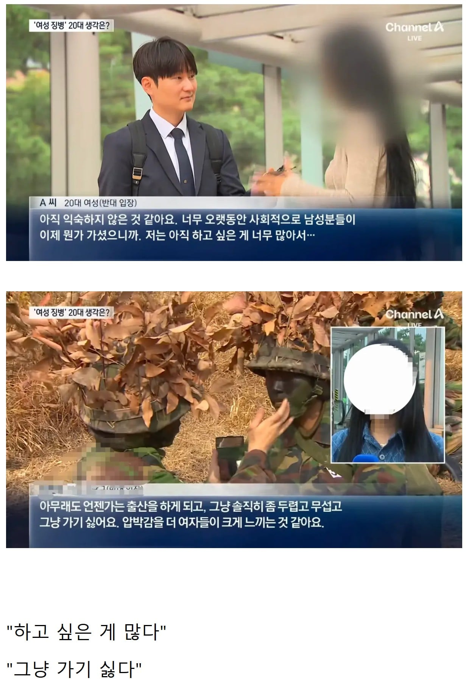

남자도 이미 '강제징용'에 거부시
실형 -> 빵살이인데 ㅋㅋㅋ
어린 자여들만 ㅈ 되었네
뭘 ㅈ돼 ㅋㅋㅋㅋ
대한민국이 어떤 나라냐면
북한이랑 전쟁나서 군인이 정말 부족한 상황에서 여자를 징집해야한다고 말하는 고위직이 있다면 바로 옷 벗어야함
당당하지 뭐라고 지껄여도 그게 당연한 대한민국인데ㅋㅋ
ㅋㅋ좆까!해도 군대보낼 사람이나 있나?
내가 뭘 가져? 누군 하고 싶은 거 없어? 언젠가 출산해?(출산율 1 미만), 누군 가고 싶고 압박감 없어? 지랄들을
임신 어쩌고 하니까 부양가족 1명이상 있으면 면제 해주면 출산율도 좋아지지 않을까?
안보니 뭐니 ㅈ까고 극한 경쟁 사회에 평등 징병 평등 혜택이 맞다고 봄 ㅋㅋ
이 뉴스는 몇명을 인터뷰해서 이 두명을 보도한걸까?
좀 토론의 가치라도 있는 답을 해야 거기에 반박을 하지 이런 반박가치가 없는 답변 뿐이니
진짜 알빠노는 쟤들아니냐ㅋㅋ
대한민국은 여자가 하기 싫으면 안해도 되는 나라인데 당연한거 아님?
"걍 원래 니가 했으니까 앞으로도 니가 하면 안돼?" ㅋㅋㅋ
우리는 씨발아
아니 출산하면 면제 시켜주면 되잖아. 남자한테는 없는 특별한 혜택인데.
근데 생각해보니 외고환이 왜 면제지? 라고 생각하는 와중에 검색해보니 이젠 4급으로 변경됐네.
마지막 한 명까지 싸그리싹싹 끌고 가는구나 시발
나도 하고 싶은거 많았어..
한국 최대의 악습
사다리 걷어찬놈들은 정작 피를 안봄
밑에서 올라오는애들만 억울해 미치고 세대혐오가 정당화됨
누구는 할거없고 가고싶어서 간줄
결론 " 그냥 가기 싫으니까 니들이 가 "
정리 = ' 아몰랑 해줘'
병역에 관해 올라올 때 마다 항상 적는 이야기지만, 다른 곳에 눈 절대 돌리지말고 국회의원 쪼인트를 집중적으로 공격하면 됨.
헌법은 국방의 의무를 법률에 위임하고 있고, 법률에 의하여 국방의 의무를 수행하는거니까. 그리고 그 법률이 미비하거나 입법부작위 상태니 국회의원만 집중 공격하면 됨
여자들이 안보의식이 처참하긴 함
근데 생각해보면 나도 군대가기 전엔 그랬던거같음
막 군대가기 싫고 전쟁나면 도망가야하고 그렇게 생각했는데
이제는 싀바꺼 어쩌겠노 싸워야제 같은 마인드가 눈곱만큼은 있음
어케보면 세뇌당한건가ㅋㅋㅋ
겪어보지 않아서 그럼 걍 입대시켜서 어떻게 뺑이 치는지를 겪어봐야지 지금의 평화가 있음을 감사함을 알지
뭔가 어떤 계기로 생각이 바뀐건지 되게 모호한데 가기 전과 후에 관점이 아예 바뀌었다는게 신기함
군생활하면서 자연스레 시야가 넓어지니까
아는만큼 보이는거지
뭔가 전쟁나면 ㅈ된다는 막연한 인식만 있었는데
잘하면 이기겠는데? 싶은 생각이 드는것도 이유중 하나인거같음
스타쉽트루퍼스는 선구자 영화였다 출산을 하더라도 군대를 나와야한다는 발상 자체가 어릴때는 뭔 미친소리지 싶었는데 커서 보니까 합리적인 방식 아닌가 싶음 나라를 지킬 생각 조차도 없는 인간이 가정은 어떻게 꾸리며 애는 어떻게 키우겠음
저 여자들은 어차피 자기가 갈것도 아닌데 그냥 찬성하고 깨어있다 소리를 듣지 왜 반대할까
아무 생각이 없어서 그렇지 이웃나라는 전쟁터져서 여자고 아이고 적국 병사들에게 ㄱ간당하고 고문당하고 죽임당하는게 일상인데 그런일 겪지 말라고 남자들이 희생해 주는데 그게 수십년이 지나니까 남일 처럼 보이는거임
그러니 판다새끼 집에 돌아갈땐 엉엉 쳐울면서 군대에서 장병들 죽어나는 뉴스 나와도 무표정한거임 선택적 공감
이나라 여자들은 전쟁은 남일임 공교육으로 휴전국이고 전쟁이 끝나지 않았음을 배움에도 ㅇㅈㄹ임 ㅋㅋㅋ
늦게가서 30살까지 간다쳐도
30살 여성이 출산경험한 사람이 25%라니까
1/4정도는 면제해줘도 된다생각해
지능이 떨어져서 그런가 ㅋㅋ 내놓는 근거가 다 병신이네
저렇게 살아도 되는 1등시민 ㅈㄴ부럽다ㅋㅋㅋ
누군 하고싶은거 없어서 가냐?
남자는 할 일도 없고 가고싶어서 가는줄 알았냐
보전깨가 답이다
나도 하고 싶은거 많았고
나도 가고 싶지 않았어
쉬벌
누구는 가고싶어서 갔나 ㅋㅋㅋ 근데 저게 시행되려면 여자들 찡찡거림을 받아줘야할 국방부가 얼마나 스윗할지 얼마나 속터질지 참
압박감..?
그 압박감 때문에 군입대 압두고 자살까지 하는
남자들도 있는데..
ㅋㅋㅋㅋ 난 여성징병 반대
난 이미 다녀왔고 내딸은 가면 안되니까
남자는 할게 없어서가나?
일단 찬성 반대 유무를 떠나서 기초군사훈련이랑 안보교육 정도는 받았으면 좋겠음
의무에 싫은게 어딨어 씨발련들이
누가보면 남자들은 자원하는지 알겠어